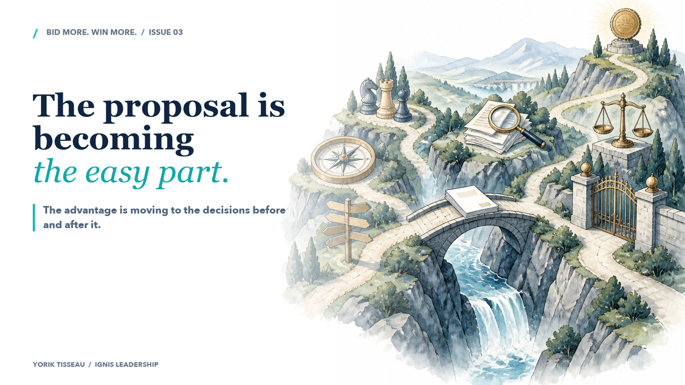
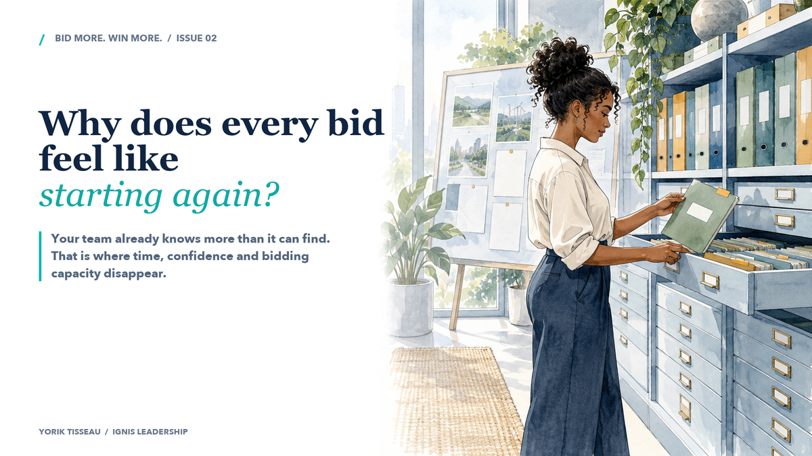
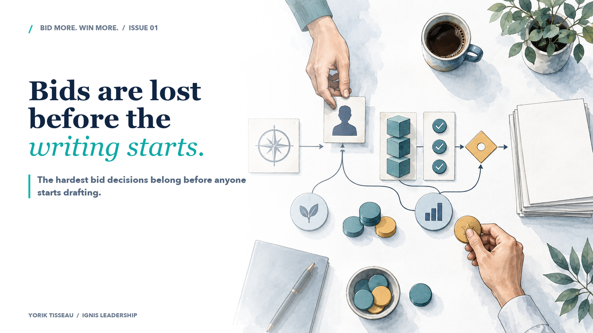

Why do tenders inherit decisions without their history?
When commercial memory breaks, capable people spend the deadline reconstructing the past instead of shaping what comes next.
When commercial memory breaks, capable people spend the deadline reconstructing the past instead of shaping what comes next.

Faster production will make slow approvals and unclear ownership harder to hide.

AI can produce more bid work. The advantage is moving to the decisions before and after it.

Your team already knows more than it can find. That is where time, confidence and bidding capacity disappear.

Why the hardest bid decisions belong before anyone starts drafting.
No editions match that search.